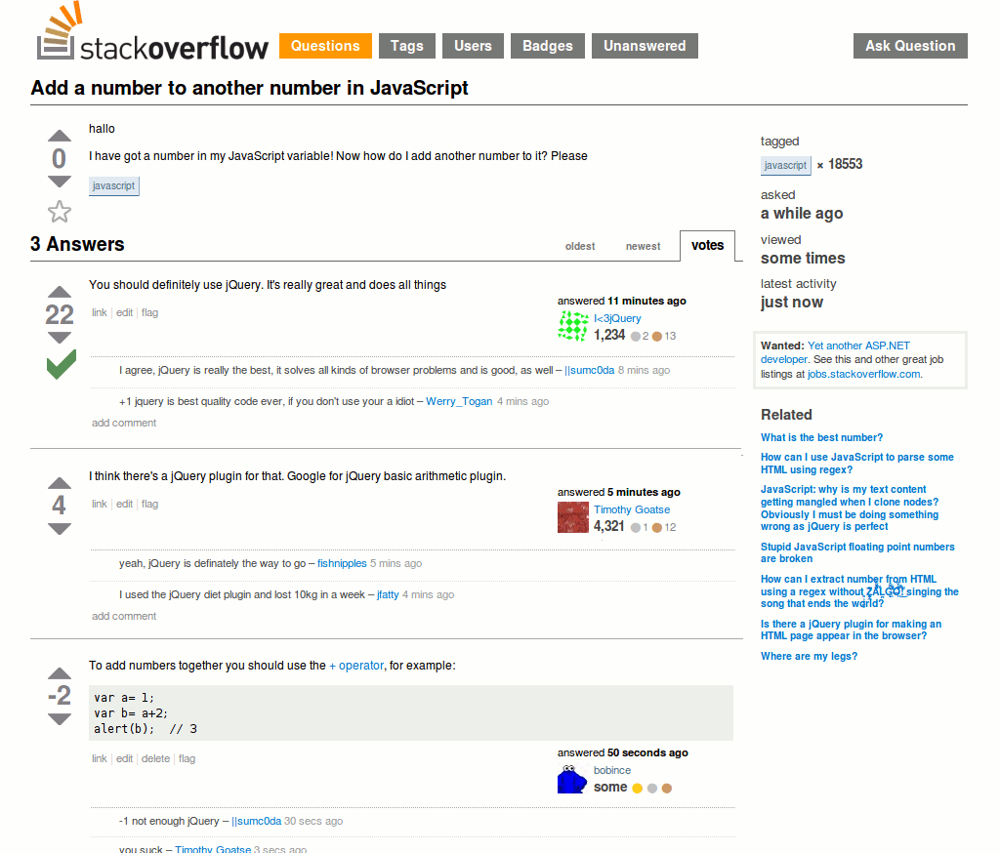

jQuery, JSON, AJAX, WebSocket
class: center, middle .title[ #<br> ] --- # What is jQuery? JavaScript library that simplifies the interaction between HTML and JavaScript with an easy to use API that works across a multitude of browsers ### Main features - DOM traversal and manipulation - Event handling - Ajax - Animations - Extensibility through plugins --- # The focus of jQuery <pre class="brush: jscript"> $('#purchase_btn').addClass('focal'); </pre> - `$()` - call jQuery - `'#someid'` - get elements with css like selector - `.addClass()` - do something to selected elements --- # Selectors jQuery accepts all css 2, 3 selectors and even more ### Basic `*, elementTag, #id, .class` ### Hierarchy `ancestor descendant, parent > child, prev + next, prev ~ siblings` ### Filters `:even, :odd, :first, :last, :not(), :empty` `:gt()` - all elements at an index greater then specified `:lt()` - all elements at an index less then specified `:hidden` - display: none, type="hidden", width & height = 0, ancestor is hidden `:visible` - are visible `:parent` - are parents to other elements, including text node `:contains()` - contain the specified **text** `:has()` - contain at least one element that matches the specified **selector** --- # More Selectors ### Attribute `[name], [name|='value'], [name*='value'], [name~='value'], [name$='value'], [name^='value']` `[name!='value']` - either no such *attribute* or specified **value** ### Child filters `:first-child, :last-child, :only-child, :first-of-type, :last-of-type, :only-of-type, :nth-child(), :nth-last-child(), :nth-last-of-type(), :nth-of-type()` ### Forms `:button, :checkbox, :file, :image, :input, :password, :radio, :reset, :submit, :text` `:disabled, :enabled, :focus, :checked, :selected` --- # Traversing Though traversing is quite a powerfull tool, it is wiser not to abbuse it too much. Overcomplicated selectors are hard to understand and affect performance. Note: `find()` is an exception, sometimes gives performance benefits `is(), not(), has()` `eq(), first(), last()` `find(), parent(), parents(), closest()` `children(), prev(), next(), siblings()` `add(), addBack(), contents()` and a few more... --- # DOM manipulations For convenience, some of these methods work as both getters and setters. Note: some methods work with only one element ### Attributes `attr(), prop(), val()` `removeAttr(), removeProp()` Note: as lots of other methods, could be used as both getters and setters <pre class="brush: jscript"> $('input').attr('type'); // "checkbox" $('input').attr('disabled', true); // [<input type="text" disabled="disabled">] </pre> ### CSS `css()` - sets inline style. ( { 'top' : 5, 'right' : 4 } ) or ( 'top', 5 ) `addClass(), removeClass(), hasClass()` `toggleClass()` - $(element).hasClass(class) ? removeClass(class) : addClass(class) --- # DOM manipulations `$('<div>')` - create element `html(), text()` - get/set html/text `remove()` - removes element from DOM `append(), prepend()` - insert specified content to the end/beginning of element `after(), before()` - insert content after/before element `height(), width()` - get/set value `clone()` - create a deep copy of an element `wrap()` - wrap element with another element `detach()` - same as remove but keeps all jQuery related data and a few more... --- # Animation `hide(), show(), toggle()` `fadeOut(), fadeIn(), fadeToggle()` `slideOut(), slideDown(), slideToggle()` Note: all of these methods accept configurations, e.g {duration: 500} `animate` - animates given css properties. Note: in most cases it is wiser to use css animations as those are much faster --- # Events ### Event Handlers `on(), off(), one(), trigger(), triggerHandler()` ### Form Events `focus(), blur(), change(), select(), submit()` ### Keyboard Events `keydown(), keyup(), keypress()` ### Mouse Events `click(), dblclick(), hover()` ### Event Object `event.preventDefault(), event.stopPropagation(), event.target` Note: some events can be used as both handlers and triggers `$('input').focus(handler)` -> attaches handler onFocus `$('input').focus()` -> sets focus on input --- # Utilities `$(document).ready()` - make sure you run your code when DOM is ready `$.each()` - generic iterator function `$.extend()` - merge the content of second+ objects into first one `$.trim()` - remove whitespace from the beginning and end of a string `$.isArray(), $.isEmptyObject(), $.isFunction(), $.isNumeric()` `$.parseHTML(), $.parseJSON(), $parseXML()` --- # jQuery Plugins One of the reasons jQuery gained so much popularity is the ease of creating plugins. Which led to a huge collection of available plugins. As a tradeoff, lots of those plugins are poorly coded and rarely properly maintained. ``` js $.fn.paintMe = function(color){ this.css('background', color); return this; } $('p').paintMe('red').text('ima red!!'); ``` --- # jQuery does it all !!1! [](http://www.doxdesk.com/img/updates/20091116-so-large.gif) --- class: center, middle .title[ # JSON ] --- ### JSON The JSON object contains methods for parsing JavaScript Object Notation (JSON) and converting values to JSON. It can't be called or constructed, and aside from its two method properties it has no interesting functionality of its own. Methods `JSON.parse()` Parse a string as JSON, optionally transform the produced value and its properties, and return the value. <pre class="brush: jscript"> JSON.parse('{}'); // {} JSON.parse('true'); // true JSON.parse('"foo"'); // "foo" JSON.parse('[1, 5, "false"]'); // [1, 5, "false"] JSON.parse('null'); // null </pre> --- ### JSON `JSON.stringify()` Return a JSON string corresponding to the specified value, optionally including only certain properties or replacing property values in a user-defined manner. <pre class="brush: jscript"> JSON.stringify({}); // '{}' JSON.stringify(true); // 'true' JSON.stringify('foo'); // '"foo"' JSON.stringify([1, 'false', false]); // '[1,"false",false]' JSON.stringify({ x: 5 }); // '{"x":5}' JSON.stringify(new Date(2006, 0, 2, 15, 4, 5)) // '"2006-01-02T15:04:05.000Z"' JSON.stringify({ x: 5, y: 6 }); // '{"x":5,"y":6}' or '{"y":6,"x":5}' JSON.stringify([new Number(1), new String('false'), new Boolean(false)]); // '[1,"false",false]' </pre> --- class: center, middle .title[ # AJAX ] --- # AJAX AJAX(Asynchronous JavaScript and XML) is only a name given to a set of tools that were previously existing. The main part is XMLHttpRequest, a server-side object usable in JavaScript, that was implemented into Internet Explorer since the 4.0 version. AJAX is a technique for creating fast and dynamic web pages. AJAX allows web pages to be updated asynchronously by exchanging small amounts of data with the server behind the scenes. This means that it is possible to update parts of a web page, without reloading the whole page. --- # AJAX transports There ara couple Javascript object or HTML tags that can provide server-client comunication: - XMLHttpRequest - Iframe - Script --- # Data formats - Text <pre class="brush: jscript"> elem.innerText = xhr.responseText </pre> - HTML <pre class="brush: jscript"> elem.innerHTML = xhr.responseText </pre> - XML Server should set "Content-Type: text/xml" <pre class="brush: jscript"> var xml = xhr.responseXML </pre> - JSON (Javascript Object Notation) <pre class="brush: jscript"> var obj = JSON.parse(responseText); </pre> --- # XMLHttpRequest ***XMLHttpReques*** is a JavaScript object that was designed by Microsoft and adopted by Mozilla, Apple, and Google. It's now being standardized in the W3C. It provides an easy way to retrieve data at a URL. Despite its name, ***XMLHttpRequest*** can be used to retrieve any type of data, not just XML, and it supports protocols other than HTTP (including file and ftp). --- # XMLHttpRequest <pre class="brush: jscript"> function vote(outputElem) { var xhr = new XMLHttpRequest(); xhr.open('GET', '/files/tutorial/ajax/xhr/vote', true); xhr.onreadystatechange = function() { if (xhr.readyState != 4) return; //return if not complete if (xhr.status != 200) { //check request status alert('Error ' + xhr.status + ': ' + xhr.statusText); return; } outputElem.innerHTML = xhr.responseText; // process result } outputElem.innerHTML = '...'; xhr.send(); } </pre> --- # jQuery AJAX ### Basic usage <pre class="brush: jscript"> $.ajax({ type: 'POST', url: 'authorization.php', data: { login: 'John', password: 'gfhjkm' }, success: onSuccess, error: onError, complete: onComplete }); </pre> --- # jQuery AJAX ### Shorthand methods <pre class="brush: jscript"> jQuery.get( url [, data ] [, success ] [, dataType ] ) jQuery.getJSON( url [, data ] [, success ] ) jQuery.getScript( url [, success ] ) jQuery.post( url [, data ] [, success ] [, dataType ] ) </pre> <pre class="brush: jscript"> .load( url [, data ] [, complete ] ) $( "#result" ).load( "ajax/test.html" ); $( "#result" ).load( "ajax/test.html", function() { alert( "Load was performed." ); }); </pre> --- # WebSocket The WebSocket specification - developed as part of the HTML5 initiative - introduced the WebSocket JavaScript interface, which defines a full-duplex single socket connection over which messages can be sent between client and server. The WebSocket standard simplifies much of the complexity around bi-directional web communication and connection management. WebSocket represents the next evolutionary step in web communication compared to Comet and Ajax. <pre class="brush: jscript"> ws = new WebSocket("ws://example.com/demo"); ws.onopen = function() { alert("Connection opened...") }; ws.onclose = function() { alert("Connection closed...") }; // 'onmessage' invoked every time the browser receives data ws.onmessage = function(evt) { $("#msg").append("<p>"+evt.data+"</p>"); }; ws.send("Hello world"); </pre> --- # Related resources - API/DOCS: - [http://jquery.com](http://jquery.com) - [http://oscarotero.com/jquery](http://oscarotero.com/jquery) - [http://learn.jquery.com/plugins/basic-plugin-creation](http://learn.jquery.com/plugins/basic-plugin-creation) - Learn jQuery: - [http://learn.jquery.com/about-jquery/how-jquery-works](http://learn.jquery.com/about-jquery/how-jquery-works) - [http://www.codecademy.com/en/tracks/jquery](http://www.codecademy.com/en/tracks/jquery) - [http://try.jquery.com](http://try.jquery.com) - [jQuery source code viewer](http://james.padolsey.com/jquery/#v=2.0.3&fn=) - jQuery Deferreds: - [http://javascriptplayground.com/blog/2012/04/jquery-deferreds-tutorial](http://javascriptplayground.com/blog/2012/04/jquery-deferreds-tutorial) - [http://javascriptplayground.com/blog/2012/05/your-own-jquery-deferreds](http://javascriptplayground.com/blog/2012/05/your-own-jquery-deferreds) - jQuery Books: - [jQuery: Novice to Ninja](http://www.amazon.com/jQuery-Novice-Ninja-Earle-Castledine/dp/0987153013/ref=sr_1_1?s=books&ie=UTF8&qid=1416057421&sr=1-1&keywords=jquery+ninja) - [Secrets of the JavaScript Ninja](http://www.amazon.com/Secrets-JavaScript-Ninja-John-Resig/dp/193398869X/ref=sr_1_2?s=books&ie=UTF8&qid=1416057421&sr=1-2&keywords=jquery+ninja) --- # Related resources #2 - [http://youmightnotneedjquery.com](http://youmightnotneedjquery.com) - [http://blog.garstasio.com/you-dont-need-jquery](http://blog.garstasio.com/you-dont-need-jquery) - [http://zeptojs.com](http://zeptojs.com/)